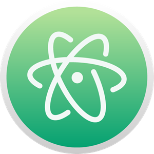

I miei programmi preferiti ed a mio parere indispensabili
PuTTY
Se si utilizza un computer Windows per programmare e collegarsi ad altri ad altri sistemi operativi (ad esempio ad un SO basato su kernel Linux), PuTTY è un programma fondamentale.
Per collegarsi ad altri computer in remoto da sistemi operativi come MacOS e Linux è sufficiente aprire una finestra di terminale e digitare "ssh utente@indirizzo".
Purtroppo per Windows non è così. Infatti non è possibile usare il prompt dei comandi per stabilire una connessione SSH.
PuTTY è un client SSH e telnet per Windows che permette appunto di stabilire connessioni con altri computer in remoto.
La connessione SSH è molto comoda quando si vuole accedere al terminale di un altro computer tramite la rete.
PuTTY è scaricabile gratuitamente da questo link.
Atom

Per scrivere qualsiasi tipo di codice in qualsiasi linguaggio di programmazione, Atom è fondamentale.
Atom è un editor di testo che integra un gestore di pacchetti, l’auto-completamento del testo e la possibilità di collaborare con più persone per scrivere un unico codice.
La funzione più utile è la possibilità di evidenziare con colori diversi le diverse parti del codice, come le funzioni, le variabili, i tag, i commenti, e così via.
Atom è cross-platform e open source. Il codice sorgente è disponibile su GitHub.
I pacchetti permettono di personalizzare Atom e aggiungere funzioni utili.
Atom è scaricabile da questo link.
Visual Studio Code
Recentemente, per i miei gusti, Visual Studio Code ha sostituito Atom. Questo programma, infatti, integra tutte le funzioni di Atom, ma permette anche di eseguire codice direttamente dal programma.
Infatti integra al suo interno un terminale, che può essere utilizzato come una normalissima finestra di terminale del nostro sistema operativo.
A differenza della versione standard di Visual Studio, VS Code è un programma molto più leggero, poiché non integra al suo interno alcun tipo di compilatore o interprete. Questi due software, infatti, devono essere già installati sul proprio computer.
VS Code è cross-platform e open source. Il codice sorgente è disponibile su GitHub.
Visual Studio Code è scaricabile da questo link.
 Se si utilizza un computer Windows per programmare e collegarsi ad altri ad altri sistemi operativi (ad esempio ad un SO basato su kernel Linux), PuTTY è un programma fondamentale.
Se si utilizza un computer Windows per programmare e collegarsi ad altri ad altri sistemi operativi (ad esempio ad un SO basato su kernel Linux), PuTTY è un programma fondamentale. Recentemente, per i miei gusti, Visual Studio Code ha sostituito Atom. Questo programma, infatti, integra tutte le funzioni di Atom, ma permette anche di eseguire codice direttamente dal programma.
Recentemente, per i miei gusti, Visual Studio Code ha sostituito Atom. Questo programma, infatti, integra tutte le funzioni di Atom, ma permette anche di eseguire codice direttamente dal programma.